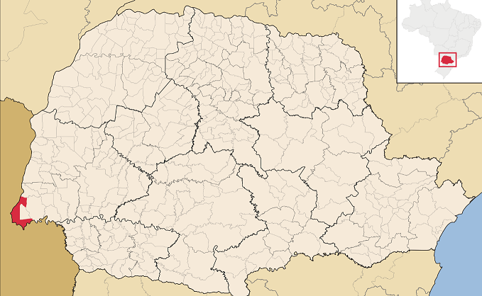
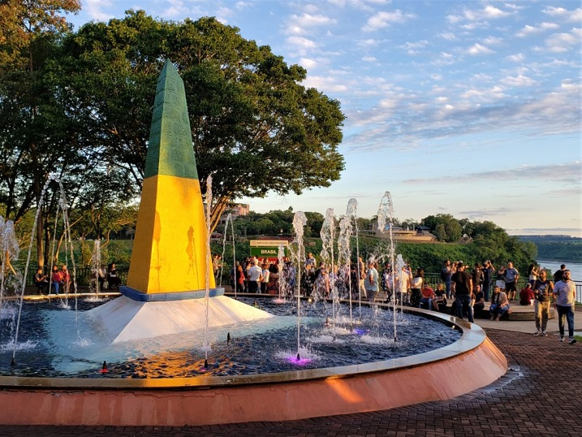
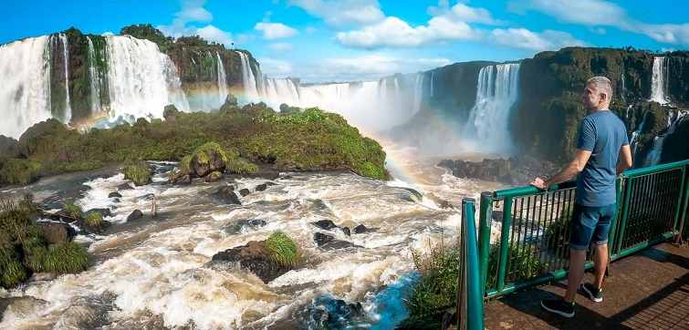

Foz do Iguaçu is a Brazilian municipality located in the West Region of the state of Paraná. Its territorial area is 617,701 km², of which 61,200 km² are in urban areas, and its population, according to IBGE estimates for 2021, was 257,971 inhabitants. According to an article published by Exame magazine, in March 2014, it is the third destination for foreign tourists in the country and the first in the southern region. Internationally known for the Iguaçu Falls, one of the winners of the contest that chose the 7 Wonders of Nature, and for the Itaipu Hydroelectric Power Plant, the second largest in the world in size and first in power generation, which in 1996 was considered one of the 7 Wonders of the Modern World by the American Society of Civil Engineers. Foz is part of a trinational urban region with more than 700,000 inhabitants, also made up of Ciudad del Este, in Paraguay, and Puerto Iguazú, in Argentina, countries with which it borders. Iguaçu is an indigenous toponym, It can be originally decomposed into Y (water) and guazú (big), resulting in the current name by adding a vowel. Its residents are designated by the gentilic "iguaçuense".
History

In 1881, Foz do Iguaçu received its first two inhabitants: the Brazilian Pedro Martins da Silva and the Spaniard Manuel González. Shortly after, the Goycochéa brothers arrived, who started to explore yerba mate. Eight years later, the military colony on the border was founded, marking the beginning of the effective occupation of the place by Brazilians.
The expedition led by engineer and lieutenant José Joaquim arrived in Foz do Iguaçu in July 1889. Thus, a population survey was carried out and 324 people were identified.
On November 22 of the same year, Lieutenant Antônio Batista and Sergeant José Maria founded the Military Colony, which was responsible for distributing land to interested settlers.
In 1897, the Fiscal Agency was created. Which recorded the existence of only 13 houses and some straw huts. In the early years of the 20th century, the population of Foz do Iguaçu reached approximately 2,000 people and the village had an inn, four grocery stores, a rustic military barracks, a lace table and a telegraph station, sugar and cachaça mills and agriculture. of subsistence.
In 1910, the Military Colony became Vila Iguaçu, a district in the municipality of Guarapuava. Two years later, the Minister of War emancipated the Colony, making it a civil settlement of the government of Paraná. On March 14, 1914, the municipality of Vila Iguaçu was created, effectively installed on June 10 of the same year, with the inauguration of the first mayor and the first Chamber of Councillors. In 1918, the municipality was renamed "Foz do Iguaçu".
The history of the Iguaçu National Park begins in 1916, with the passage through Foz do Iguaçu by Santos Dumont, the father of aviation.
The area belonged to the Uruguayan Jesus Val. Santos Dumont interceded with the President of the State of Paraná, Afonso Camargo, for it to be expropriated and made public property. On the 28th of July it was declared of public utility, with 1,008 hectares. In 1939, by decree of President Getúlio Vargas, the area was expanded to 156,235.77 hectares.
In 1994, the area of the National Park is expanded, giving it the limits proposed by the head of the National Parks section, which today are 185,000 hectares.
With the inauguration of the International Friendship Bridge (Brazil - Paraguay) in 1965 and the inauguration of the BR-277, connecting Foz do Iguaçu to Curitiba and the coast, in 1969, Foz do Iguaçu had its development accelerated, intensifying its commerce, mainly with the Paraguayan city of Ciudad del Este.
The construction of the Itaipu Hydroelectric Power Plant, begun in the 1970s, caused strong impacts throughout the region, considerably increasing the population of the municipality, from 33,970 inhabitants in 1970 to 136,320 inhabitants in 1980.
International relations

Foz do Iguaçu is one of the Brazilian Mercocities. Together with the Paraguayan city of Ciudad del Este and the Argentinean Puerto Iguazú,
form an urban area known in the region as Triple Frontier, thus being characterized as Tri-Cities.
Argentina Puerto Iguazú, Misiones, Argentina;
Paraguay Ciudad del Este, Alto Paraná, Paraguay.
Economy

The main sources of income in Foz do Iguaçu are tourism, which also leverages trade and services in the region, and electricity generation.
It is the second destination for foreign tourists in the country and the first in the southern region.
Foz do Iguaçu is internationally known for its tourist attractions, which bring visitors from Brazil and the world. The most famous are the set of falls called Iguaçu Falls,
in the Iguaçu National Park and the Itaipu Hydroelectric Plant (the largest hydroelectric plant in the world in terms of annual energy production).